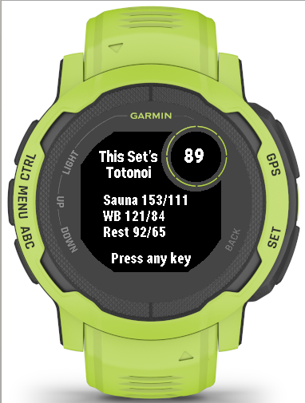
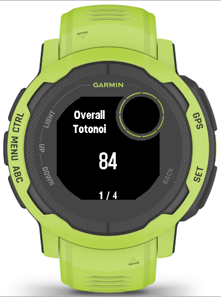
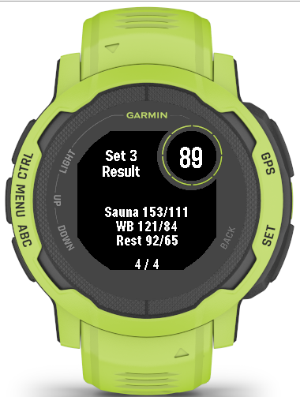

Garmin App
Sauna Timer
サウナ、水風呂、休憩の時間を計測し、セッションのログを記録するGarmin Instinctシリーズ向けアプリです。
アプリ概要
Sauna Timerは、サウナで過ごす時間を計測し、各セットのログを記録するためのタイマーアプリです。サウナ、水風呂、休憩の3つを1セットとして、セッション全体を分かりやすく管理できます。
1セットの流れ
- サウナ
- 水風呂
- 休憩
サウナ、水風呂、休憩では、それぞれに設定した時間をカウントダウンします。残り時間が0になるとウォッチが振動し、現在のフェーズが終了したことを知らせます。
主な機能
- セットごとのスコア表示
- 各セットの終了時に、独自の計算方法による「TotonoiScore」を表示します。
- 全セットの振り返り
- セッション終了時に、完了したすべてのセットのスコアをまとめて確認できます。
- Garmin Connectへのログ送信
- FIT SaveをONにすると、計測したログをGarmin Connectへ送信できます。
注意事項
対応機種
現在、次の機種に対応しています。
- Instinct 2 / Solar / Dual Power / dezl Edition
- Instinct 2S / Solar / Dual Power
- Instinct 2X Solar
- Instinct 3 Solar 45mm / 50mm
- Instinct E 40mm / 45mm
初代Garmin Instinctには対応していません。
動作確認について
Instinct 2で実機動作を確認しています。その他の対応機種については実機での動作確認を行っていません。
高温環境でのスマートウォッチの使用は推奨されていません。使用によるスマートウォッチの故障や破損について、一切の責任を負いません。
使用上の注意
Sauna Timerは、サウナ時間の管理を補助するためのアプリです。
体調不良、めまい、息苦しさ、強い動悸などを感じた場合は、アプリの表示や通知に関係なく、ただちに利用を中止してください。
サウナ施設のルールに従い、水分補給と休憩を十分に取りながら、無理のない範囲で使用してください。
本アプリは医療機器ではありません。表示される心拍数やスコアは、診断・治療・安全判断を目的としたものではありません。
ウォッチが振動するタイミング
Sauna Timerは、次のタイミングでウォッチを振動させて通知します。
- フェーズ終了時
- サウナ、水風呂、休憩の残り時間が0になったときに、ウォッチが振動します。
- フェーズ終了30秒前
- 30sec AlertがONの場合、残り時間が30秒になったときにウォッチが短く振動します。
- タイマーの停止が続いているとき
- Stop AlertがONの場合、タイマーが停止したままであることを2分ごとに通知します。
- アウフグースモード中
- 経過時間が10分に達した後、5分ごとの区切りでウォッチが振動します。
- 心拍数や温度が一定以上になったとき
- デバイスやセンサーから情報を取得できた場合に通知します。取得状況によって動作は異なります。
使い方
Garminウォッチの物理ボタンを使って操作します。はじめにボタンの呼び方を確認し、その後、各画面の説明に沿って操作してください。
各種ボタン
起動画面

アプリを起動したときに表示される画面です。
- ENTER タイマーを開始します。
- DOWN メインメニューを開きます。
- BACK タイマー開始前であれば、アプリをすぐに終了します。
最後に選択したプリセット、またはTimer Editで保存した設定が読み込まれます。
タイマー動作中

現在のフェーズと残り時間を確認しながら、セッションを進める画面です。
- ENTER Timer Menuを開きます。このメニューを開いている間、タイマーは停止します。
- DOWN メインメニューを開きます。メニューを開いている間もタイマーは動き続けます。
- UP 現在のフェーズを延長します。サウナと休憩は1分ずつ、最大5分まで延長できます。水風呂は30秒ずつ、最大2分まで延長できます。
- DOWN を素早く2回押すと、残り時間を短縮します。サウナと休憩は30秒ずつ、水風呂は10秒ずつ短縮できます。
- BACK を素早く2回押すと、タイマーを止めずに終了確認画面を開きます。
短縮後の最小残り時間は、サウナと休憩が30秒、水風呂が10秒です。
タイマー停止中と、フェーズ終了直後の待機中は短縮できません。
画面に表示される情報
- 右上 現在のセット数
- 赤枠 現在の心拍数
- 青枠 現在のフェーズ
- 緑枠 現在のタイマー残り時間
- 黄色枠 現在時刻
リザルト画面
セットリザルト

セットが終わり、次のセットを開始する際に、そのセットのTotonoiScoreと各フェーズの最大・最小心拍数が表示されます。
10秒経過するか、何かキーを押すと元の画面に戻ります。
全体リザルト


アプリを終了する際に、今回のリザルトを表示します。トータルTotonoiScore、各セットのTotonoiScore、各フェーズの最大・最小心拍数を確認できます。
UP／DOWNキーでページを切り替えられます。自動では終了しないため、確認が終わったらENTERまたはBACKキーを押してください。
Timer Menu

UP／DOWNで項目を移動し、ENTERで選択します。Timer Menuを開いている間、タイマーは停止します。
BACKでタイマーを再開し、タイマー画面に戻ります。
Aufgussモード

アウフグースモードは、サウナのフェーズ中だけ使用できます。このモードでは通常のカウントダウンを行いません。サウナを開始してからの経過時間を、0から増やして表示します。
ENTERを素早く2回押すか、Timer Menuで再度「Aufguss」を選ぶと、通常モードへ戻ります。
- 設定時間が残っている場合は、その残り時間からカウントダウンを再開します。
- 設定時間を過ぎている場合は、残り5秒からカウントダウンを再開します。
設定が7分の場合、経過時間6分で解除すると残り1分、経過時間10分で解除すると残り5秒から再開します。
経過時間が10分に達した後は、5分ごとの区切りでウォッチが振動します。
Main Menu


UP／DOWNで項目を移動し、ENTERで選択します。BACKでタイマー画面に戻ります。
Preset Timer

UP／DOWNでプリセットを切り替え、ENTERで適用します。BACKで前の画面に戻ります。
| プリセット | Sauna | WB | Rest |
|---|---|---|---|
| Preset 1 | 7分 | 30秒 | 7分 |
| Preset 2 | 10分 | 60秒 | 8分 |
| Preset 3 | 5分 | 20秒 | 10分 |
| Edit Timer | Timer Editで最後に保存した値 | ||
Edit Timerの初期値はPreset 1と同じです。最後に選択したプリセットは保存され、次回起動時にも使用されます。
Timer Edit

UP／DOWNで表示中の値を増減し、ENTERで次の項目へ進みます。BACKを押すと編集をキャンセルして前の画面に戻ります。
設定項目は、サウナ、水風呂、休憩の順に切り替わります。休憩の時間を設定した後にENTERを押すと、設定値を保存してタイマー画面へ戻ります。
| 項目 | 設定範囲 | 単位 |
|---|---|---|
| Sauna | 1～15分 | 1分 |
| WBath | 10～120秒 | 10秒 |
| Rest | 1～15分 | 1分 |
Setting

UP／DOWNで項目を移動し、ENTERでON／OFFを切り替えます。BACKで前の画面に戻ります。設定した値は次回起動時にも引き継がれます。
水風呂を30秒以下で開始した場合、30sec Alertはウォッチを振動させません。ただし、延長によって残り時間が30秒以上になった場合は通知の対象になります。
FIT Saveは、タイマーを開始する前にだけ変更できます。タイマーを開始した後は設定を変更できません。
History


過去のセッション結果を最大10件まで確認できます。新しい履歴が追加されると、古い履歴から順に上書きされます。
FIT SaveがOFFでも、アプリ内の履歴は保存されます。ただし、Garmin Connectには送信されません。
- UP／DOWN 履歴や詳細ページを移動します。
- ENTER 選択した履歴の詳細を開きます。詳細画面では履歴の削除確認を開きます。
- BACK 前の画面へ戻ります。
履歴の詳細では、開始日時、全体のTotonoiScore、セット数、サウナ・水風呂・休憩の平均心拍数、各セットのTotonoiScoreを確認できます。
終了確認

UP／DOWNで項目を移動し、ENTERで選択します。BACKでタイマー画面へ戻ります。
画面上部には、当日のセットのTotonoiScoreの平均が表示されます。TotonoiScore算出前に終了メニューを開くと、N/Aと表示されます。
RESULT画面ではUP／DOWNでページを切り替え、BACKで終了確認画面に戻ることができます。
サウナを60秒以上実行して休憩に到達したセットが1つもない場合は、FITファイルとアプリ内の履歴を保存しません。
フェーズ終了後、またはタイマー停止後の待機状態が10分間続くと、アプリは自動で終了します。自動終了した場合は、アプリ内の履歴を保存しません。
FAQ
準備中です。